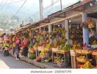

Festivals and Celebrations
Traditional dishes are central to many Ghanaian festivals like Homowo, Hogbetsotso, and Aboakyir. These events are often marked by communal cooking and sharing of food to express unity and gratitude.
In Ghana, food is more than sustenance—it is deeply embedded in cultural traditions, social rituals, and family gatherings. Meals often bring people together, especially during festivals, ceremonies, and community events.
Traditional dishes are central to many Ghanaian festivals like Homowo, Hogbetsotso, and Aboakyir. These events are often marked by communal cooking and sharing of food to express unity and gratitude.
Most families in Ghana eat together from a shared bowl, reinforcing bonds and togetherness. Each region has signature meals passed down through generations.

Local markets are vibrant hubs where fresh ingredients are sold. These markets reflect Ghana’s agricultural richness and the connection between land, food, and culture.